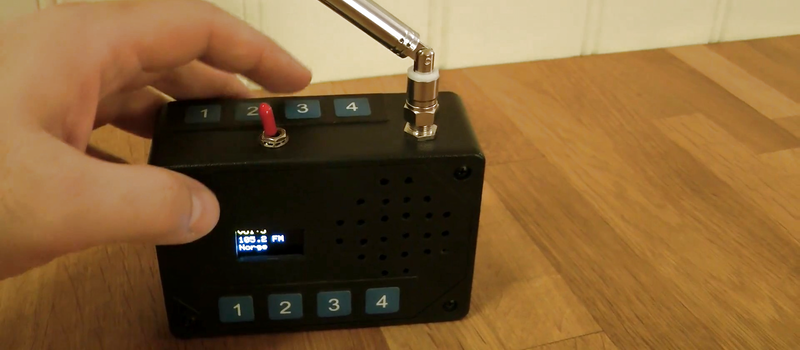
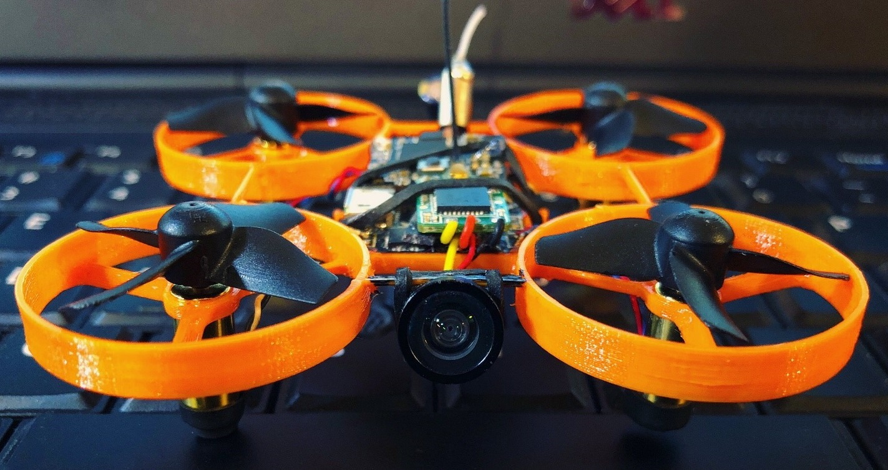
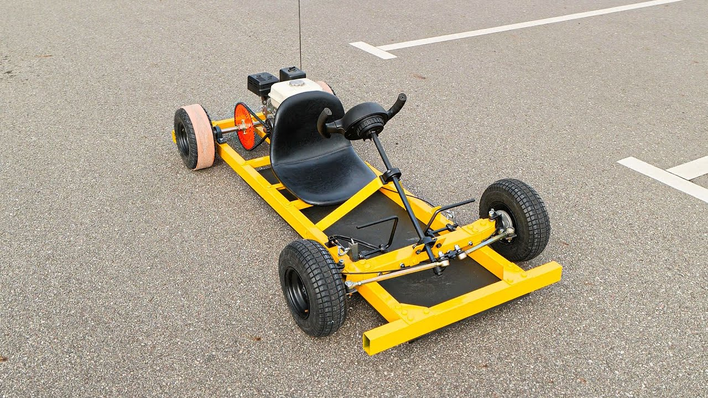

Here are three ideas I have for the final project. Still trying to figure out if they are feasible, but I'm really excited about all of them!

I'm really inspired by builds that can move and fly! I would love to make a small drone, equipped with a camera, that can do some function, e.g. it can recognize my face in a sea of other faces and land in my hand, or can autonomously adjust itself based on wind conditions and altitude. I would need to design and probably 3D print the drone frame, the mount for the camera, the propeller guards, and the landing gear. I am interested in outsourcing the camera and the Raspberry Pi, which may be needed to run any software I want to execute on the drone. I imagine the drone could be connected via a normal radio transmitter and perhaps there could be a function in my code that can execute the "return to home" or "facial recognition" idea.

In the same vein of building functional objects that can move, my second idea is building a go-cart. When I was a kid, there was this small Lightning McQueen toy car that I would drive and it was my favorite thing to do. I think we take a lot of our tools and devices, cars included, for granted these days, and I would love to learn how to build a small car from scratch. I would need to design and build a frame for the car, install axles, a steering system, and find a chair or seat for the driver to sit on. I could use a gas or electric engine, but I think assembling a small gas engine is the most doable option. Both idea 1 and 2 are a bit out of my wheelhouse, but I think they are awesome and would love to learn more about how flight in drones and motion through engines work.
Lastly, I am very interested in the idea of building a radio! I have heard that building a DIY radio is often a lab exercise in high school classes, but I've never built one and I would really like to learn how the electronics and the science behind radio transmission works. I was thinking that there could be a speaker and an electric screen that shows what radio channel you are on. After a quick Google Search, it seems that I will need a radio module, a microcontroller, a display, and a speaker/amplifier. I think it would be awesome to build the structure for the radio with 3D printing or in wood.